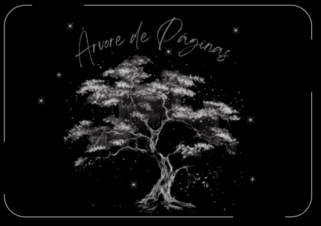

<!DOCTYPE html>
<html>

<head>
  <meta charset="utf-8">
  <meta name="viewport" content="width=device-width">
  <title>replit</title>
  <link href="style.css" rel="stylesheet" type="text/css" />
</head>

<body>

  <script src="script.js"></script>

  <!--
  This script places a badge on your repl's full-browser view back to your repl's cover
  page. Try various colors for the theme: dark, light, red, orange, yellow, lime, green,
  teal, blue, blurple, magenta, pink!
  -->
  <script src="https://replit.com/public/js/replit-badge-v2.js" theme="dark" position="bottom-right"></script>
</body>

<center>  <center>
  <title> Ás linhas de uma árvore <title>   <span style="color:white">

<div class="row">
  <div class="column">
    
  </div>
  <div class="column">
    
  </div>
   
 
</html>

<head>
  <meta charset="utf-8">
  <meta name="viewport" content="width=device-width">

  <link href="style.css" rel="stylesheet" type="text/css" />
</head>

<body>

  <h1 style="text-align: center; font-size: 28px; "> ______________________________________</h1>
  <span style="color:white">

    <h1 style="text-align: center; font-size: 28px; "> Se ainda pode ver as letras, pode ver histórias. </h1>
  </span>
  <p style="text-align: center; font-size: 20px;">

  <p style="text-align: center; font-size: 24px;">
  <p style="text-align: center; font-size: 20px;">
  <p>

    
    <script src="https://replit.com/public/js/replit-badge-v2.js" theme="dark" position="bottom-right"></script>
</body>

</html>
